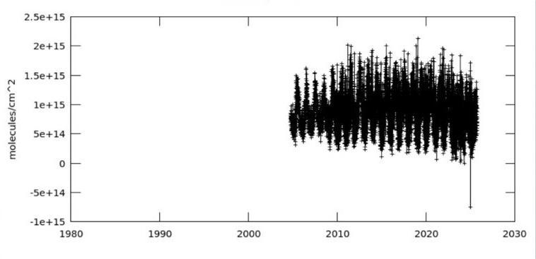
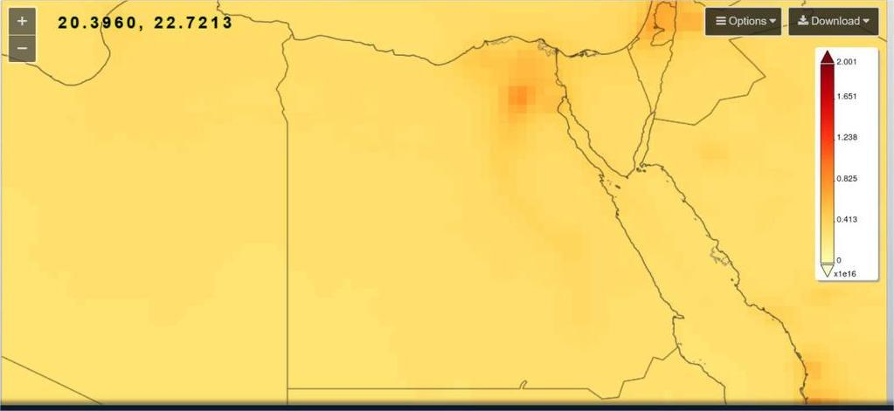
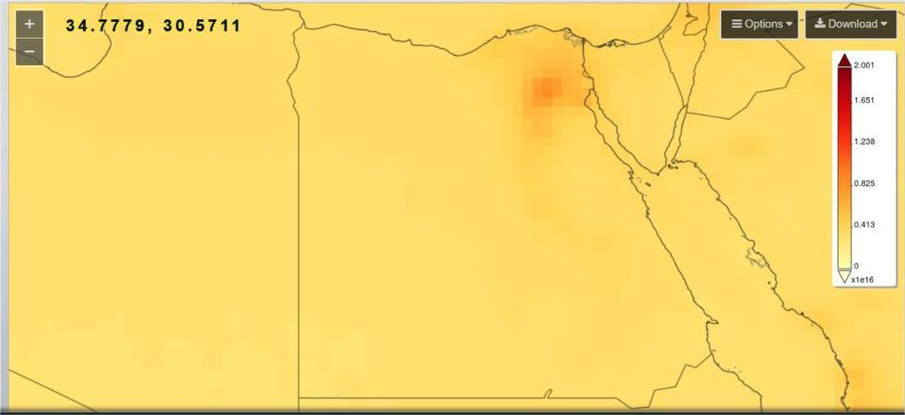
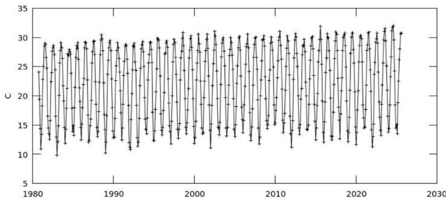
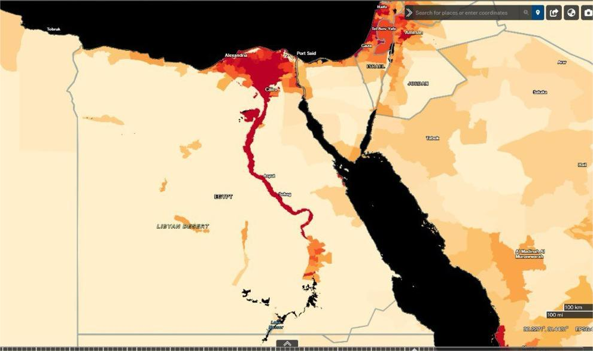
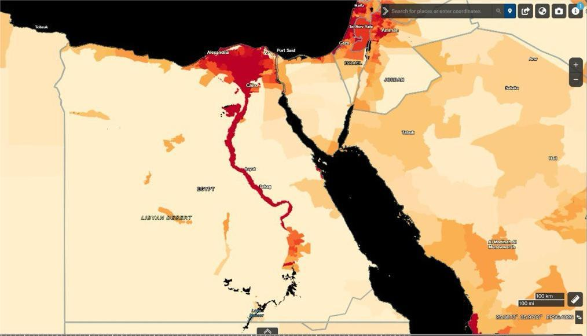

Sustainable Solutions for Cairo and Delta Cities using NASA Earth Observation Data
Integrating NASA Earth Observation data with local urban planning to address Cairo's environmental and public health challenges, aiming for cleaner air, more green spaces, and resilient urban growth.
The Greater Cairo and Delta regions experience high levels of air pollution due to traffic congestion, industrial activity, and agricultural waste burning.
Long-term exposure to nitrogen dioxide (NO2) and other pollutants is linked to respiratory and cardiovascular illnesses, making air pollution a critical environmental and public health concern.



Rapid urban expansion in Cairo and the Delta has caused a reduction and fragmentation of green spaces, worsening air pollution and increasing urban heat. Loss of vegetation also affects mental well-being and community health.
NDVI (Normalized Difference Vegetation Index) and Land Surface Temperature (LST) data identify vulnerable areas, guiding tree planting, park creation, and urban greening initiatives.

We propose integrated urban planning strategies based on NASA data:
Population growth drives air pollution and green space loss. Mapping population density over time emphasizes how urban sprawl stresses infrastructure and the environment, highlighting the need for sustainable growth.

